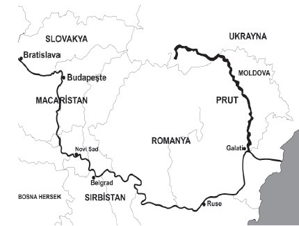

Baltacı Mehmet Paşa, Şafirof’a ilk önce bütün ordunun teslim olmasını teklif ediyor, Şafirof da buna karşı Rus ordusunun bir çarına kadar taarruz edeceğini, bununla birlikte ordunun esir olmaktansa son nefere varıncaya kadar yok olmayı göze aldırdığını söylüyordu. Şafirof’un bu sözlerini Osman Ağa da tasdik etmiş, bunun üzerine Baltacı altı saatlik bir ateşkes imzalayarak bu esnada sulh şartlarını düzenlemekle meşgul olacağını söylemişti. Mehmet Paşa bu ateşkes hükümlerine tamamıyla uymuştu. Hatta ateşkes esnasında beygirlerine ot aramaya giden Rus Ordusuna mensup iki İtalyalıyı Tatarların esir ettiklerini haber alır almaz bunların kafalarını kestirmiş, İtalyalıları da Rus ordusuna[48] iade ettirmişti.
Fakat Tatar hanı Devlet Giray ile Ponyatovski, Ruslarla anlaşma imzalanmasını asla arzu etmiyorlardı. Devlet Giray, barış anlaşması yapıldığı takdirde Çar’ın senelik Tatar hanlarına kırk bin duka vermesini, Osmanlılara ihaneti sabit olan Moldova Prensi’nin görevden alınmasını talep ediyordu. Fakat Mehmet Paşa, Osman Ağa’nın teşvikiyle, bu sözlerin hiç birine önem vermemiş, barış antlaşması hükümlerini istediği gibi düzenlemişti. Osmanlılar için o derece büyük bir menfaat temin etmeyen bu barış antlaşması gereğince Petro, Azak kalesi ile kaleye bağlı yerleri terk edecek, Kaminsak, Sımara ve Tigan kalelerini yıkacak, bundan böyle Potkal ve Bırabaş kazaklarının işlerine karışmayacaktı. Diğer maddeler de İstanbul’da Çar’ın sefir bulundurmasına, esirlerin değişimine, Osmanlı Hükümetine sığınan 12. Şarl’ın istediği gibi memleketine dönmesine, hatta istedikleri takdirde Petro ile Şarl’ın anlaşma yapmalarını, Rusya ile Osmanlı Devleti’nin bundan sonra dostane yaşamalarını içeriyordu. Diğer bir maddede ise Petro’nun tam bir sükunetle dönebilmesi temin ediliyor ve geri çekileceğine teminat olmak üzere Piyer Şafırof ile Mişel Petroviç, Şeremetiyef rehin olarak alıkonuluyordu. Anlaşma 23 Temmuz 1171 tarihinde imza edilmiş, Osmanlılar bu anlaşma hükümlerine tamamen riayet ederek, Rusların geri çekilmesini de kolaylaştırmışlardı. Petro, Osmanlılardan intikam almak hırsıyla mağlup ve perişan dağılmış ordusuyla memleketine dönerken, Osmanlılar anlaşma hükümlerine riayet düşüncesiyle Rus ordusuna her türlü kolaylığı gösteriyorlar, erzak tedarik ediyorlar, onları felaketten kurtarmaya çalışıyorlardı.
Artık Baltacı Mehmet Paşa tam istikbalini korumuş, gördüğü tebessümlerin, aldığı hediyelerin etkisi ile bu zararlı anlaşmayı yapmıştı. Osmanlı Orduları Kosova, Niğbolu, Varna, Mohaç zaferlerinin parlak neticelerini ancak imha muharebeleri sayesinde kazandıkları, düşmanlarından “barış mükâfatı” diye verilen hediyelere asla tenezzül etmedikleri halde Baltacı Mehmet Paşa, hırs ve menfaat tesiri ile bu prensibi unutmuş, vatanına en faydalı olacak bir fırsatı büyük bir başarı temin ediyorum zannıyla elden kaçırmıştı. Nitekim bu esnada Osmanlı Ordusu’nda zaaf alametleri görülmüştü, fakat Rusların mahrumiyet ve perişanlığına, Rus ordusunda manevi gücün kayıp olmasına karşı bu zaaftan hiçbir zarar görülemezdi. Rus Ordusu tamamiyle perişan edilir, Rusya’ya karşı ağır teklifler ortaya sürmesi için bir heyet gönderdiği zaman, bundan evvel Osmanlı Devleti ile meydana gelen harplerde Rusların eline geçmiş olan bütün kalelerin teslimine Liyovanya’nın ve diğer sahildeki şehirlerin İsveç’e terkine, icap ederse Petersburg’un yerine Pegof’un hatta Rusya içlerindeki sair şehirlerin terkine, Lehisçinik’in tekrar mevkiine iade edilmesine, hükümete tazminat ve Padişah’a da hediye verilmesine razı edilebilirdi.[49] Fakat Şafırof Sadrazam Paşa’nın gayet hafif şartlarla barışa razı olduğunu Petro’ya haber verdiği zaman, Petro son derece memnun olmuş, metresi Marit’in şu fikri alakasını son derece takdir ederek, bilahare kendisine Katerina adıyla nikâhlamış, hatta bir de St. Katerin nişanı icat ederek üzerine “Vatana sevgi ve sadakati olanlara” ibaresini yazdırmıştı[50].
Prut Barış Anlaşması Petro için pek müsaitti. Petro’yu güneyden zayıf düşürmek mümkün olduğu gibi kuzeydeki fetihlerini geriye alma, kazanma ve İsveç’e karşı mevkiini şekillendirerek daha ağır şartlar içinde barış anlaşması yapmak mümkündü.
Fakat Baltacı buraları değerlendirmeye almıyor, esasen kendisine de güvenemiyordu. Hatta Rusya’nın teklif ettiği kalelerin alınmasını bir ganimet saymış “Bizim istediğimiz kalelerin her biri bin sefere ve bin meşakkatlere muhtaçtır. Hazır bu kadar zahmet ve meşakkatsiz elimize girerken bu nimeti bilmeyip fırsata mahzur olursak neuzibillâh bunun güçlüğünün çekileceğinden şüphe yoktur.”[51] fikrine inanmıştı.
Petro intikam alma hırsıyla vatanına döndüğü sırada 12. Şarl Osmanlı ordugâhına gelmiş, kendisini karşılayan Kont Ponyatovski’den bu mühim fırsatın kaybedildiğini haber almıştı. Bu havadis Şarl’ı son derece hiddetlendirmişti. Şarl kendini kaybedercesine bir heyecanla doğru Baltacı’nın çadırına gelmiş, imzaladığı sulh anlaşmasından dolayı kendisine sitemde bulunmuştu. Baltacı Mehmet Paşa büyük bir başarı kazandığına kani bulunduğu için Şarl’ın sözlerine hiç önem vermemişti.
Hatta Şarl Baltacı Mehmet Paşa’ya:
— Bütün Rus Ordusu elinde idi. Neden bıraktın? Dediği zaman
“El-afu zekatül zafer affetmek zaferin zekâtıdır.” sözünün - pek yanlış değerlendirdiği manasını Şarl’a anlatmaya çalışmıştı. Sonra Şarl:
— Peki, bu böyle olsun, fakat Petro’ya gayet ağır tekliflerde bulunmak mümkün iken niçin bu teklifleri ortaya koymadın? Özellikle Çar’ı esir edip İstanbul’a götürmekte mi elinde değildi, diye hiddetli kızgın tavırlarla Baltacı’ya sorduğu zaman, Baltacı manalı, hile ve desise ile dolu nazarlarını Şarl’a çevirmiş;
— Ben onu esir edersem, memleketini sonra kim idare eder diye cevap vermişti.

Prut Nehri Haritası